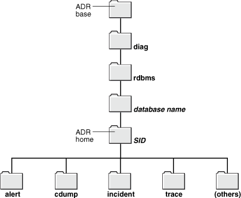

2019.10.03 BoobooWei
关于Oracle代码的可测量性
在应用设计和开发中，可测量性至关重要。每一版Oracle数据库的可测量性都越来越好。
- Oracle 10g 将内核中的代码测量发展到一个全新的层次，引入了自动负载存储库
Automatic Workload Repository,AWR和活动会话历史Active Session History,ASH特性； - Oracle 11g 则更进一步，引入了自动诊断存储库
Automatic Diagnostic Repository,ADR和SQL性能分析器SQL Performance Analyzer,SPA; - Oracle 12c 在原来的基础上又增加了 DDL 日志以记录数据库中所有的DDL操作，此外还增加了调试日志，用于记录数据库中产生的一些异常情况。
——摘自《Oracle编程艺术：深入理解数据库体系结构(第3版)》
从指标采集，到自动诊断和SQL分析，个人觉得Oracle的监控告警做得太棒了！相信不久的将来，Oracle 可以做到故障自愈 ^.^
从 Oracle 11 g开始，Oracle数据库有一个高级故障诊断系统用于收集和管理诊断数据。诊断数据包括以前版本中也存在的跟踪文件，转储和核心文件，以及使客户和Oracle支持人员能够快速有效地识别，调查，跟踪和解决问题的新型诊断数据。
在这一章当中：
- 关于Oracle数据库故障诊断基础架构
- 调查，报告和解决问题
- 使用企业管理器支持工作台查看问题
- 创建用户报告的问题
- 查看警报日志
- 查找跟踪文件
- 使用运行状况监控器运行运行状况检查
- 使用SQL Repair Advisor修复SQL故障
- 使用Data Recovery Advisor修复数据损坏
- 创建，编辑和上传定制事件包
今天要学习的跟踪文件只是 Oracle 11g 高级故障诊断系统收集的数据之一，本节我们将集中学习各种跟踪文件中的信息，如某类跟踪文件到底是什么，在哪里，对这些跟踪文件能够做什么。
自动诊断存储库ADR
自动诊断存储库Automatic Diagnostic Repository,ADR中的文件目录结构

- 该图显示了单个数据库实例的ADR的目录结构，其中每个目录都由一个文件夹表示。顶部是一个标有“ ADR base”的文件夹。
- 在ADR基础之下是一个名为diag的目录，在其下是一个名为rdbms的目录。在rdbms目录下面是一个目录，其名称为数据库名称。
- 在该目录下是目录全名的是数据库SID。此目录由标签标记为数据库实例的ADR主目录。例如我的环境中是
/u01/app/oracle/diag/rdbms/dbtest/dbtest - ADR主目录（名称为数据库SID的目录）下面是以下子目录：alert，cdump，event，trace和其他。
| 目录 | 英文 | 说明 |
|---|---|---|
trace |
Diag Trace |
用户进程和后台进程产生的诊断跟踪文件 |
alert |
Diag Alert |
XML格式的告警日志 |
incident |
Diag Incident |
记录事件信息，包含多个子目录，其中每个子目录都为特定事件命名，每个子目录包含仅与该事件有关的转储 |
cdump |
Diag Cdump |
内核跟踪目标，当发生严重问题时（如进程崩溃）会自动生成相应的跟踪文件 |
hm |
Health Monitor |
运行状况监控器报告 |
[oracle@oratest dbtest]$ pwd |
跟踪文件的分类
我们将跟踪文件分成两大类：
- 计划内的，由用户请求所产生的跟踪文件：如启用
DBMS_MONITOR.SESSION_TRACE_ENABLE产生的跟踪文件。这类文件包含会话相关的诊断信息，它有助于你调整及优化应用的性能，并诊断出瓶颈到底在哪里。 - 计划外的，数据库服务器自动产生的跟踪文件：当数据库服务器发生某些严重错误时，它会自动生成这些跟踪文件。这些错误包括（但不限于）
ORA-00600 "Internal Error"（内部错误）、ORA-03113 "End of file on communication channel"（通信通道上文件结束）以及ORA-07445 "Exception Encountered"（遇到异常）。这些跟踪文件包含一些诊断信息，它主要对 Oracle Support 的分析人员有用，但对我们来说，除了能看出应用中哪里出现了内部错误之外，用处不大。
计划内的，由用户请求所产生的跟踪文件
这些跟踪文件包含与诊断和性能相关的信息。他们对于了解数据应用的内部工作有着非凡的意义。在一个正常运行的数据库中，这类跟踪文件最为常见。
产生方式
DBMS_MONITOROracle 9iR2及更早的版本中可用alter session set sql_trace=TRUE10046事件等Oracle拓展跟踪工具
跟踪文件的位置
不论使用以上三种产生方式中的哪一种，Oracle都会在以下两个位置之一产生跟踪文件：
- 如果使用专用服务器连接，会在
user_dump_dest参数指定的目录中生成跟踪文件； - 如果使用共享服务器连接，会在
backgroup_dump_dest参数指定的目录中生成跟踪文件。
如何查看跟踪文件的位置？
- sqlplus 执行
show parameter dump_dest - 查看视图
v$parameter - 查看视图
v$diag_info
命名约定
Oracle 跟踪文件的命名约定随着版本不同而变化。
Linux系统的命名规范如下：
| 数据库版本 | 跟踪文件名 |
|---|---|
| 9i Release 1 | ora_10583.trc |
| 9i Release 2 | ora9ir2_ora_1905.trc |
| 10g Release 2 | ora10gr2_ora_6793.trc |
| 11g Release 2 | ora11gr2_ora_1990.trc |
| 12c Release 1 | ora12cr1_ora_2344.trc |
除了9i Release 1，其他版本的跟踪文件名包含以下部分：$ORACLE_SID_ora_<进程ID>.trc
- 第一部分：
$ORACLE_SID - 第二部分：
ora - 第三部分：专用服务器在操作系统中的
进程ID
对跟踪文件加标记
当我们无权访问v$process 和v$session的时候，想得到跟踪文件的名字就比较困难了。这时，我们可以对跟踪文件“加标记”来找到它。
- 有权限访问
user_dump_dest目录 - 使用会话参数
tracefile_identifier来标记跟踪文件
alter session set tracefile_identifier = 'Look_For_Me'; |
执行以上命令可以获取到添加标记的两个文件：
/u01/app/oracle/diag/rdbms/dbtest/dbtest/trace/dbtest_ora_22489_Look_For_Me.trc/u01/app/oracle/diag/rdbms/dbtest/dbtest/trace/dbtest_ora_22489_Look_For_Me.trm
.trc结尾的文件为标记后的跟踪文件；.trm结尾的文件为跟踪文件的图文件trace map file,包含了跟踪文件的结构信息。
计划外的，数据库服务器自动产生的跟踪文件
产生方式
- 这类跟踪文件的产生不在我们的计划内
- 由
ORA-00600或另外某个内部错误而自动产生
处理方式
针对这类跟踪文件我们能做什么？
- 向Oracle提交一个服务请求
- 将产生的跟踪文件打包上传到Oracle Support
从Oracle 11g开始，利用命令行工具ADRCI(Automatic Diagnostic Repository Command Interpreter)并结合Enterprice Manager的用户界面，就能轻松查看自动诊断存储库ADR中的跟踪信息，并把它们打包传输到Oracle Support。
[oracle@oratest ~]$ adrci |
实践
实践——查看是否开启跟踪文件
show parameter trace |
实践——查看跟踪文件位置
show parameter dump_dest |
这里显示了三个跟踪目标：
background_dump_dest：后台跟踪目标，用于所有服务器后台进程core_dump_dest：内核跟踪目标，当发生严重问题时（如进程崩溃）会自动生成相应的跟踪文件user_dump_dest：用户跟踪目标，用于专用/共享服务器的跟踪文件
实践——启用用户跟踪文件
exec dbms_monitor.session_trace_enable |
疑问？
> grep sqlplus
oracle 3230 2951 0 05:06 pts/0 00:00:00 rlwrap sqlplus / as sysdba
oracle 3231 3230 0 05:06 pts/1 00:00:00 sqlplus as sysdba
oracle 3309 3250 0 05:12 pts/2 00:00:00 grep sqlplussqlplus 的系统进程id为3231，但是产生的跟踪文件却是3232！
[root@oratest ~]# ps -ef|grep 3231
oracle 3231 3230 0 05:06 pts/1 00:00:00 sqlplus as sysdba
oracle 3232 3231 0 05:06 pts/1 00:00:00 oracledbtest (DESCRIPTION=(LOCAL=YES)(ADDRESS=(PROTOCOL=beq)))可以看到3231有一个子进程 3232 zhege jiushi Oracle的用户会话进程，因此跟踪文件使用的是 3232 ，而不是3231的sqlplus客户端进程。
笔记
1. 查看常用的跟踪文件路径
show parameter diagnostic_dest |
2. 掌握常用跟踪文件命名规则
- 警报日志：
alert_<$ORACLE_SID>.log,数据库报错信息的概要文件 - 后台进程的跟踪文件:
<$ORACLE_SID>_进程名字_pid.trc，后台进程工作时的消息或者报错信息 - 用户进程的跟踪文件:
<$ORACLE_SID>_ora_pid.trc,记录user process发出的消息，但是需要手工打开跟踪
3. 掌握打开/关闭当前会话跟踪的方法
exec dbms_monitor.session_trace_enable |
4. 掌握打开/关闭指定的会话跟踪方法
获得需要跟踪的会话的信息：
select sid,serial#,username,machine from v$session where username='SYS';打开跟踪：
EXEC DBMS_SYSTEM.SET_SQL_TRACE_IN_SESSION(sid,serial#,boolean);做业务
关闭跟踪：
EXEC DBMS_SYSTEM.SET_SQL_TRACE_IN_SESSION(sid,serial#,boolean);查找跟踪文件：
select spid from v$process p,v$session s where p.addr=s.paddr and s.sid=20;格式化用户跟踪文件:
tkprof orcl_ora_5874.trc 1.txt
举例：
SQL> select sid,serial#,username,machine from v$session where username='SYS'; |